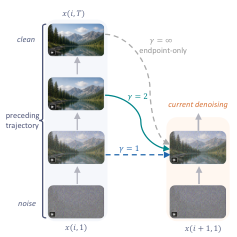

When you paint the next panel of a mural, looking only at the finished previous panel tells you what it shows, not how it was built. While you are still blocking out shapes, an early sketch of that panel helps more; when you are adding fine detail, a near-final version does. Trajectory Forcing hands each step the version that matches where it is.
벽화의 다음 칸을 그릴 때, 완성된 앞 칸만 보면 무엇을 그렸는지는 알아도 어떻게 쌓아 올렸는지는 모른다. 아직 큰 형태를 잡는 중이라면 앞 칸의 초벌 스케치가 더 도움이 되고, 세부를 다듬는 중이라면 거의 완성된 상태가 도움이 된다. Trajectory Forcing은 각 단계에 그 단계에 맞는 버전을 건넨다.
How it works: pick a point on the previous trajectory작동 방식은 앞 궤적에서 한 지점을 고르기
Existing methods give every step the earlier chunks' clean endpoints; Trajectory Forcing gives each step a point that is ahead of it by a fixed signal-to-noise factor γ.
기존 방법은 모든 단계에 앞 청크의 깨끗한 끝점을 준다. Trajectory Forcing은 각 단계보다 신호 대 잡음비가 일정 배수 γ만큼 앞선 지점을 준다.

- Steps as tokens.단계를 토큰으로.Each denoising step, not each chunk, is the unit, so later steps can draw on earlier chunks' intermediate predictions.청크가 아니라 디노이징 단계 하나를 단위로 보아, 뒤 단계가 앞 청크의 중간 예측을 쓸 수 있게 한다.
- One point per chunk.청크당 한 지점.A closed-form rule picks the point; γ = 1 is step-aligned, γ → ∞ is endpoint-only, and γ = 2–3 works best. The KV cache stays the same size.닫힌 식이 지점을 고른다. γ = 1은 같은 단계, γ → ∞는 끝점만이며, γ = 2~3이 가장 좋다. KV 캐시 크기는 그대로다.
- Two training stages.두 학습 단계.Flow matching on real video with pseudo-trajectories, then distribution matching on the model's own rollouts with Wan2.1-14B as teacher.실제 영상과 유사 궤적으로 플로 매칭을 하고, 이어서 Wan2.1-14B를 교사로 모델 자신의 생성 위에서 분포 매칭을 한다.
Key point: less drift over long rollouts핵심은 긴 생성에서 덜 흐트러짐
Over 30 seconds, six times the training horizon, image quality decays less than with Self Forcing or Causal Forcing. Methods trained specifically for long video drift least, but tend toward static scenes.
학습 길이의 6배인 30초 동안, 화질이 Self Forcing이나 Causal Forcing보다 덜 떨어진다. 장편 전용 학습을 한 방법들이 가장 덜 흐트러지지만, 장면이 거의 멈춰 있는 경향이 있다.
Results: a better long-video balance결과는 더 균형 잡힌 장편 영상
On 30-second videos, Trajectory Forcing scores the highest overall total, including above methods trained for long video.
30초 영상에서 Trajectory Forcing은 장편 전용 학습을 한 방법들까지 포함해 종합 점수가 가장 높다.
On short 5-second clips the gain is small but improves quality and semantics together, at a modest speed cost.
5초 영상에서는 향상 폭이 작지만 품질과 의미를 함께 올리고, 속도는 조금 느려진다.
| Method | FPS | Total | Quality | Semantic |
|---|---|---|---|---|
| CausVid | 17.0 | 81.33 | 83.98 | 70.72 |
| Rolling Forcing | 15.8 | 83.07 | 83.61 | 80.89 |
| LongLive | 18.0 | 83.09 | 83.69 | 80.69 |
| Causal Forcing | 17.0 | 84.04 | 84.59 | 81.84 |
| Self Forcing | 17.0 | 84.31 | 85.07 | 81.28 |
| Trajectory Forcing | 15.0 | 85.15 | 85.89 | 82.20 |
The intermediate predictions an autoregressive video model already computes are free context. Feed earlier chunks' partly denoised states to the matching steps instead of only finished frames; adding random noise to the endpoint instead does not reproduce the gain.자기회귀 비디오 모델이 이미 계산한 중간 예측은 공짜 맥락이다. 완성 프레임만 주지 말고 앞 청크의 반쯤 디노이징된 상태를 맞는 단계에 주자. 끝점에 무작위 노이즈를 더하는 것으로는 같은 이득이 나지 않는다.
One base model at one resolution, short-clip gains under one point, and speed drops from 17.0 to 15.0 FPS with no matched-speed comparison. Methods trained for long video still drift less over 30 seconds.기반 모델 하나와 해상도 하나만 썼고, 짧은 영상의 향상은 1점 미만이며, 속도는 17.0에서 15.0 FPS로 떨어지는데 같은 속도에서 비교하지 않았다. 30초 동안의 이탈은 장편 전용 학습 방법들이 여전히 더 적다.